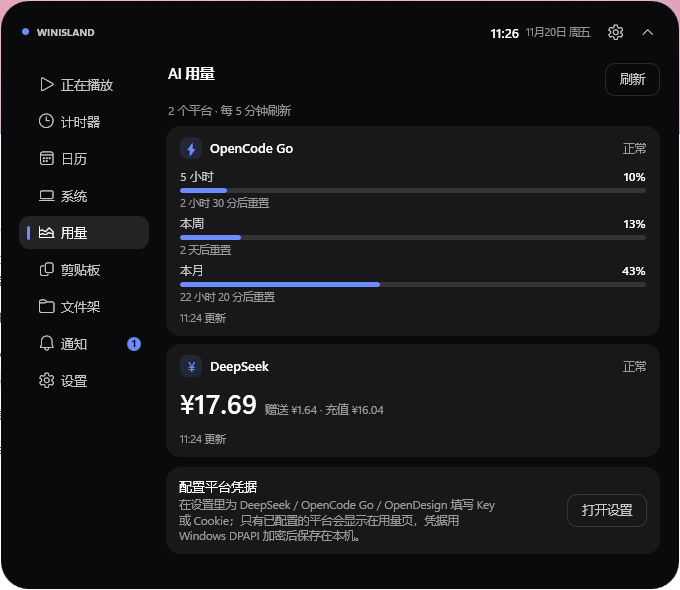

正在播放
封面、曲目、进度条与播放控制。紧凑态也能拖动进度，支持所有使用 Windows SMTC 的播放器。
媒体、耳机、AI 用量、系统状态、剪贴板与通知，全部收进屏幕顶部的一个小岛。 不挡视线，不占桌面，需要的时候一眼就能看到。
A Dynamic Island for Windows 10/11 — media controls, Bluetooth earbuds, AI usage, system monitor, clipboard and notifications in one top-of-screen notch.


把 Windows 上零散的小操作，收进一个随时可用的顶部小岛。
封面、曲目、进度条与播放控制。紧凑态也能拖动进度，支持所有使用 Windows SMTC 的播放器。
OPPO、华为、小米、vivo、索尼、漫步者等 12+ 品牌。电量、降噪、EQ、空间音效、查找耳机与贴合度检测。
DeepSeek 余额、OpenCode Go 与 OpenDesign 的额度窗口。按你的优先级显示，用量紧张时上岛提醒。
CPU、内存、网络实时曲线，音量、亮度、播放设备切换，以及麦克风、摄像头和大小写状态。
最近 30 条文本 / 文件、4 张图片一键回填。拖入文件自动展开，松手加入文件架，重启后保留。
窗口靠近时自动收成顶部细线，回到桌面再展开；也可以贴边隐藏，鼠标移到顶部才出现。
九个面板，统一的深色设计。点击截图可以放大查看。
按平台顺序展示额度，接近上限时自动提醒。
没有额外的启动器、账号或云端。WinIsland 直接运行在桌面顶部，只在你需要的时候出现。

一个 exe，双击就能用。不需要安装 .NET，也不需要管理员权限。
不需要。发布的是自包含单文件版本，下载后直接运行，不会弹出运行时安装提示。
OPPO / OnePlus / realme、华为 / 荣耀、小米 / Redmi、vivo / iQOO、索尼、漫步者、森海塞尔、三星、Google、Bose、Nothing、AKG、水月雨、EarFun，以及部分 USB 2.4G 游戏耳机。具体可用的降噪、EQ、空间音效取决于型号与固件。
Key 使用 Windows DPAPI 加密，只保存在当前用户的电脑上；程序只向你配置的平台接口发请求，不上传到其它地方。也可以改用环境变量，不保存 Key。
多品牌耳机控制基于 GPL-3.0 的 EncoDeck / OppoPods 协议实现，因此整个项目以 GPL-3.0 发布，源码公开。
耳机通常只允许一个厂商控制客户端占用控制通道。同时运行官方客户端、EncoDeck 或本程序时可能争用，关闭其中一个即可。
目前提供免安装单文件版本，安装版（Setup.exe）在规划中；数据和设置会保存在 %AppData%\WinIsland，升级或卸载默认不会删除。